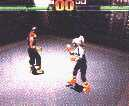

|

Review

Game Type: 3D Fighting
Polygon fighting with ring-outs. A true 3D fighting game, since you
can move anywhere in the ring with complete freedom (U and D on the pad
let you rotate around your opponent).
Gameplay: 95/100
Ordinarily, I dismiss any game that uses a block button. (That's right,
although I respect VF2 greatly I never really got into it, and everyone knows
how I feel about MK. The block button seriously limits my enjoyment of
Soul Edge.) So I was horrified to discover Tobal uses a button not only to block,
but to jump as well. I gritted my teeth and tried it anyway (especially since
I had already paid to import my copy). A jump button is about the only
practical way to jump, since up and down on the pad makes you rotate around
your opponent. They still could have let you press back to block, but after
playing a while I've decided it's not so bad.
The special moves are nothing fancy. No fireballs or even unrealistic spin
kicks here. The moves still offer plenty of eye candy, though, and your
friends will still gape whenever you pull one of the more brutal kicks. The
way the characters stagger or fall after taking a hit is extremely realistic.
While playing I couldn't help thinking, "This is how a real fight would look.
Well, except for Ill's tail attack."
Graphics: 95/100
If ever screenshots failed to do a game justice, it is so with Tobal.
Flat-shaded polygons don't look too good next to Tekken's texture-mapping or
Soul Edge's beautiful Gouraud shading. But even blank polygons look great at
this incredibly fast framerate. The background selection is a mixture of
bland and breathtaking, but you won't find any flat bitmaps here. The
stronger moves are accentuated with trails of light, a feature I got so used
to in SE that it's hard to do without. At least see a video clip of this game
before dismissing it on grounds of graphics.
Sound: 90/100
After ranting about the graphics I'm not devoting much space to sound, but
it's not that it isn't good. The music is again a mixed bag, with some tracks
unappealing and others fantastic, but none annoying. (It's played directly
off the CD, unfortunately for those still stuck in swap method.) The voice actors are
great and the sample quality is perfect. The hits are about as loud as
Tekken 2 (read: adequate but not as loud as I'd like). No complaints here,
though.
Overall: 92/100
Overall very impressive. After playing this I have to look at even my beloved
Tekken 2 with a more critical eye. (It's still mo' betta, tho.) Virtua Fighter
fans who own only a Playstation now have no more reasons to regret their
choice of systems.
Codes
- Alternate Camera Angle
- Hold L2 and R2 on the character select screen and press X to choose a
character. When the fight begins the camera will be at a higher elevation.
|